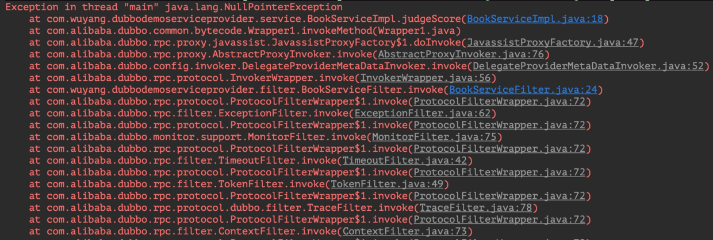
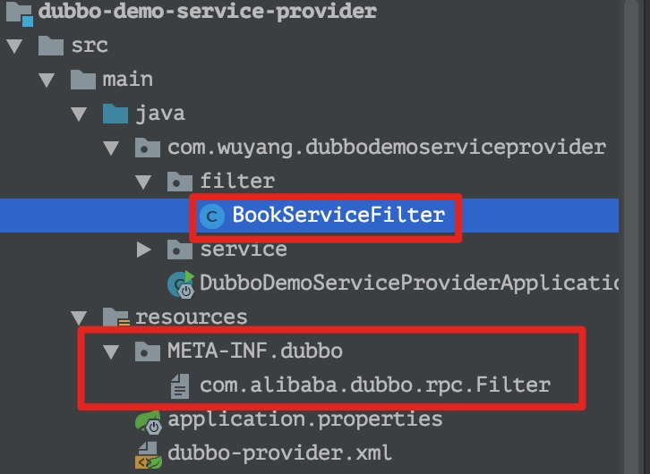
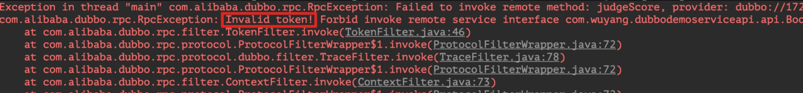

前言
Dubbo内置了非常多的过滤器，合理利用内置过滤器能节省很多开发时间。另外还可以根据Dubbo的SPI来自定义过滤器。
1 问题引出
Provider端提供一个BookService服务，用来给书籍评分；Consumer端调用该服务，先看一下目录结构：
其中BookService如下，文末有源码链接，所以文中有些细节配置就不展开了：
1 |
|
启动好zk，然后运行Provider，然后运行Consumer的main方法，
1 | public static void main(String[] args) { |
我们看到控制台报错：
报空指针在预料之内，因为judgeScore中调用了book.getName().length()，但是在consumer端并没有设置book实例的name属性，所以报了NPE。
但是我们能从这个报错中获知的信息却十分有限，我们只知道报了NPE，却不知道具体是哪个属性，在对象属性特别多的情况下这是很不利于排查问题的。
并且这个错误是provider端抛到consumer端的，那其实这样的POJO校验问题能不能在consumer端就做呢？毕竟并不涉及到业务逻辑，在consumer端校验失败后，就能直接抛出异常，还不用去发起RPC调用，Dubbo早就考虑到了，使用过滤器就能轻松解决。
2 问题解决 开启校验
2.1 使用校验：
使用校验有下面几个步骤
2.1.1 xml配置校验属性
通过validation属性来开启参数校验
1 | // consumer端开启校验 |
如果在consumer端校验，如果失败，不会发起rpc调用；而provider校验的话，会首先发起rpc调用；
本文demo在consumer端开启校验
2.1.2 引入校验包
1 | <dependency> |
这里稍微提一下，Dubbo官网上关于参数验证小节，使用的hibernate-validator版本是4.2.0.Final，所以还需要再额外引入validation-api包，但是5.3.5.Final版本已经内部引入了maven依赖关系，无需再手动引入validation-api
另外再解释一下为什么要引入这个包，其实Dubbo的参数验证同样基于 JSR303规范实现的，目前hibernate的校验实现基本上用的是最广泛的，包括SpringMVC内部也默认是使用hibernate的校验实现来做POJO的校验。所以Dubbo没必要自己再去实现一套校验，具体的校验实现用户可以自由添加。这里其实可以类比SpringMVC的校验，其实是一样的，而且如果使用SpringBoot来管理项目，在spring-boot-starter-web模块中，已经自动引入了hibernate-validator，可以方便使用
2.1.3 加入校验注解
在Book类的属性上加上需要的注解：
1 | public class Book implements Serializable { |
2.2 验证
完成上面3步以后，然后再次运行consumer的main方法，抛出下面异常：
1 | Exception in thread "main" javax.validation.ConstraintViolationException: |
这一次我们就能获取到足够的错误信息来定位问题，并且是在consumer端直接抛出异常，并没有发起无用的RPC调用
3 实现原理
通过第2小节已经知道参数校验的优势，它的实现原理是通过过滤器ValidationFilter来实现的。在invoker调用服务时，会先走过滤链，过程可以参考文章++Dubbo服务调用++
可以跟到ValidationFilter类中的invoke方法中看一下，在 if 体内进行了参数校验，如果失败就抛出异常，这里就不深入了~
3.1 过滤链构建
多个过滤器组成一个过滤链，顺序执行过滤器，使用了责任链模式。那么过滤链是在哪里构建的呢？可以参考下面的方法com.alibaba.dubbo.rpc.protocol.ProtocolFilterWrapper#buildInvokerChain 和文章++Dubbo服务调用++
4 自定义过滤器
现在假设有一个需求是统计所有调用provider端judgeScore方法中，书籍页码大于300页的调用。这在日常也经常遇到，其实就是一个后端代码埋点。
那么如何优雅的实现呢，使用Dubbo的自定义过滤器就可以对业务代码无侵入并且可拔插的实现埋点需求。
自定义过滤器非常容易，有下面几个步骤
4.1 添加META-INF文件
在resources下新建META-INF/dubbo目录，新建名为com.alibaba.dubbo.rpc.Filter的文件，文件内容如下：
1 | book=com.wuyang.dubbodemoserviceprovider.filter.BookServiceFilter |
这个也就是Dubbo SPI的格式了等于号左侧是该过滤器的名字，注意要确保唯一，等号右侧是自定义过滤器的全类名
这里直接给出文件目录截图
4.2 实现自定义类BookServiceFilter
再次感觉Dubbo的扩展性很强，只需要实现Filter接口，实现invoke方法即可，根据实际业务需要在if语句体内执行所需的埋点代码即可，这里就打印一下log
1 |
|
4.3 开启过滤器
完成上面两步之后，我们只需要在provider端的XML配置中，给需要增加该过滤器的service指定过滤器即可：
1 | <dubbo:service interface="com.wuyang.dubbodemoserviceapi.api.BookService" ref="bookService" filter="book" /> |
另外，如果有多个过滤器要指定，filter属性后面的值使用英文逗号分隔即可
4.4 自定义过滤器验证
重新启动provider，consumer的main方法再次执行(记得设置Book的name属性把NPE避免掉)
1 | ... |
观察provider控制台输出：
验证成功
5 内置过滤器
Dubbo的内置过滤器非常多，下面选两个来分享一下
5.1 TimeoutFilter
1 | public class TimeoutFilter implements Filter { |
这个过滤器是在provider端使用，它可以记录所有超时的请求，但是只会打印WARN日志，不会影响实际的服务调用。超时报错的返回信息并不是在该线程来实现的，所以就算超时报错信息已经返回给consumer端了，但是已经发起的服务调用还是照常继续执行，故可以统计到服务执行的实际所花时间
5.2 TokenFilter
这个过滤器个人觉得还是挺有意思的，我们知道consumer是可以绕过注册中心直连provider端，而provider端并不能区分当前的consumer的调用是否有经过注册中心，那如何拒绝未经注册中心而直连的请求呢。
解决方法就是provider在启动的时候，带上一个token码，放在数据总线URL上，一并注册到注册中心；然后consumer端如果是从注册中心获取的provider地址，那么就会携带上token码，provider在处理请求的时候，会使用TokenFilter过滤器验证token码是否和provider注册到注册中心的一致，不一致则拒绝请求。
下面来验证一下
首先是consumer端的XML配置中直连服务端：
1 | <dubbo:reference id="bookService" interface="com.wuyang.dubbodemoserviceapi.api.BookService" url="dubbo://172.16.104.143:20882" validation="true"/> |
然后provider端加上token校验：
1 | <dubbo:service interface="com.wuyang.dubbodemoserviceapi.api.BookService" ref="bookService" filter="book" token="123"/> |
重启provider，再次运行consumer，观察控制台报错如下：
provider端XML去掉token="123"属性，再次调用即可成功。
6 小结
Dubbo的过滤器用处还是很大的，合理利用可以很优雅和高效的进行开发，内置的过滤器种类很多，可以去看一下，如果能结合实际，用到实际开发中，就可以节省比较多的时间，比如上面provider端服务埋点的场景，其实还是比较常见的，利用自定义的过滤器，基本上不需要多少时间就可以解决。
文中源码链接：
https://github.com/wuyangLife/some-blog-demos/tree/master/dubbo-demo